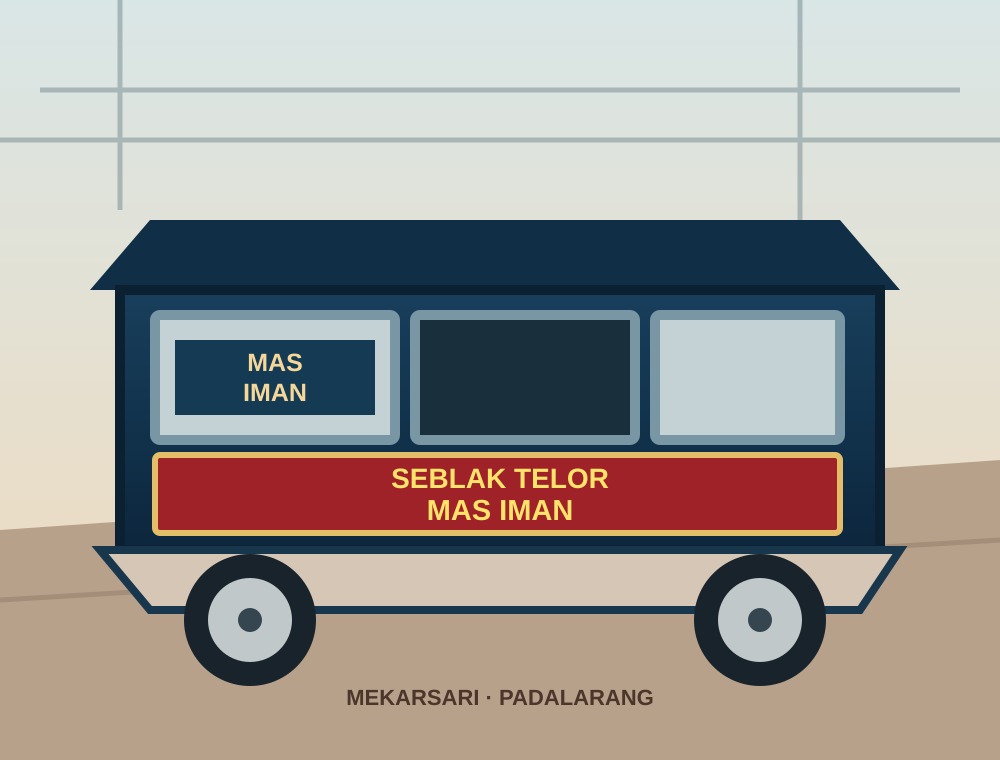

01
Seblak 1 Telur
Porsi dengan 1 telur dan isian seblak jadul.
Rp8.000
Racikan seblak telur dengan kerupuk, makaroni, dan kwetiau. Pilih jumlah telur dan level pedas sesuai selera.


Seblak Telor Mas Iman menyajikan seblak dengan isian kerupuk, makaroni, dan kwetiau. Tinggal pilih porsi telur dan tingkat pedas yang kamu suka.
Mampir langsung untuk menikmati seblak. Lokasi berada di kawasan Mekarsari, dekat jembatan rel dan Stasiun Padalarang.
Mekarsari, Kecamatan Ngamprah, Kabupaten Bandung Barat, Jawa Barat 40552.
Gunakan Google Maps untuk melihat titik lokasi dan petunjuk arah terbaru.
Navigasi ke lokasiJadwal dagang dapat berubah. Untuk memastikan warung buka atau seblak masih tersedia, cek WhatsApp Story Pak Iman sebelum datang.
Selasa, Kamis, Sabtu, dan Minggu mengikuti jadwal dagang. Hubungi untuk informasi. Website ini tidak menampilkan status buka secara real-time.
Cek info terbaru, lalu mampir langsung ke Seblak Telor Mas Iman.